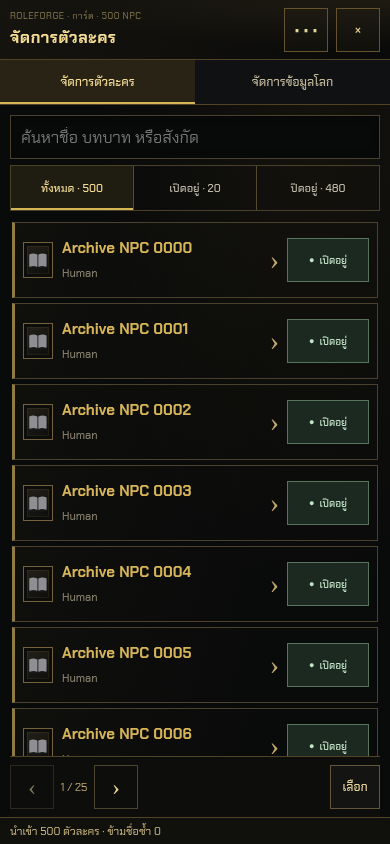
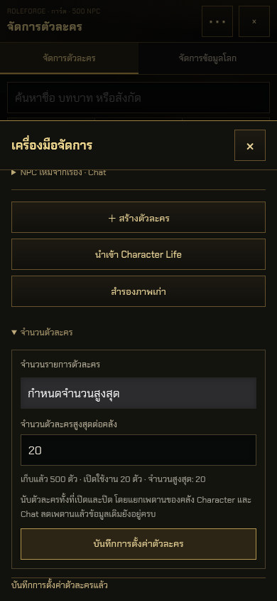
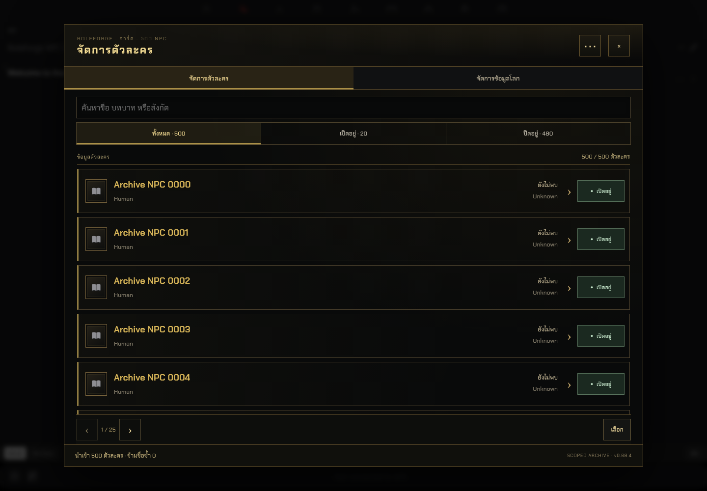
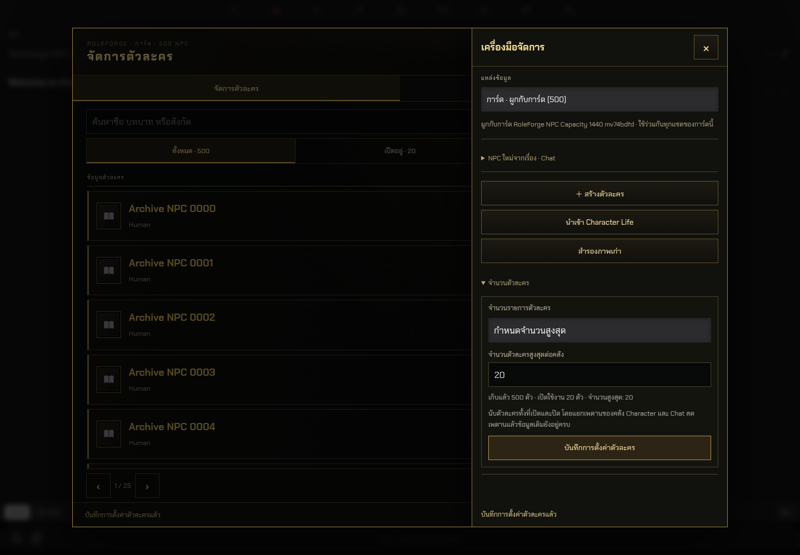

RoleForge 0.68.4 · จำนวนตัวละคร
ภาพจาก SillyTavern 1.19.0 จริง ในโปรไฟล์ทดสอบแยก: เก็บ 500 ตัว เปิดใช้งาน 20 ตัว ปิดไว้ 480 ตัว การลดเพดานเหลือ 20 เก็บข้อมูลเดิมทั้งหมดไว้
มือถือ · คลัง 500 ตัว
มือถือ · ตั้งค่าจำนวน
คอม · คลัง 500 ตัว
คอม · ตั้งค่าจำนวน
วิธีใช้งานและข้อจำกัด · ผลทดสอบ